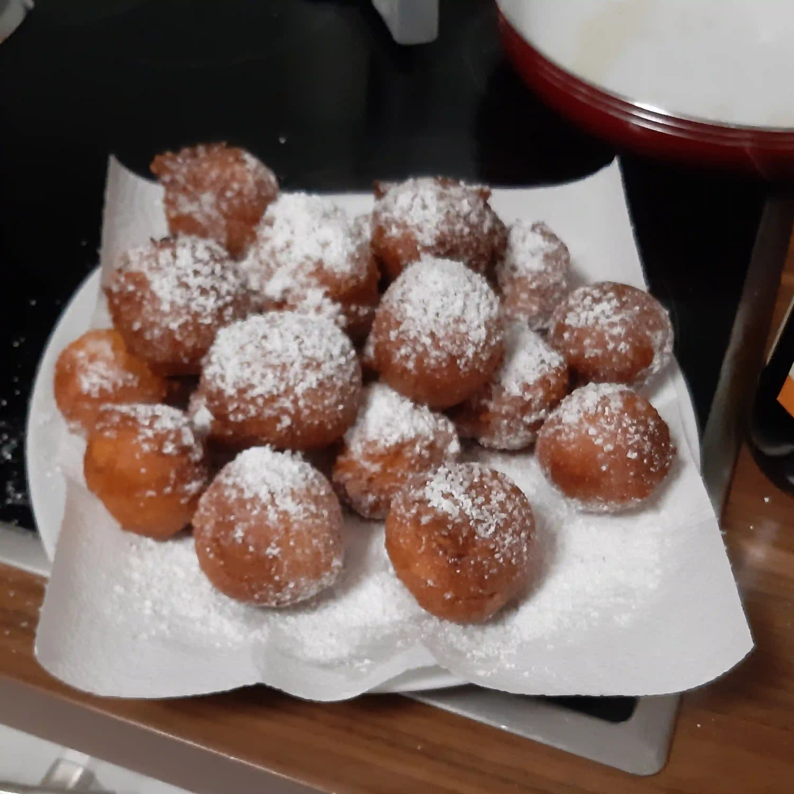

Quarkbällchen – Fried curd balls

“Quark” is a type of fresh dairy product. It’s usually translated as curd cheese or cottage cheese.
Ingredients
- 420ml quark (plain yoghurt can be used as a replacement)
- 2 eggs
- 6 or 7 tbsp of sugar
- 2 packets of vanilla sugar
- 400g flour (500g if using yoghurt)
- 2 packets of baking powder
- 1L sunflower oil for frying
- (Optional) icing sugar
- (Optional) Alcohol by eye so that they do not soak up so much oil
Directions
- Mix ingredients (quark, eggs, sugar, flour, baking powder) in one bowl.
- Pour the sunflower oil into a cooking pot and heat up the hotplate
- Form balls from the dough and put them into the cooking pot
- Once they are brown-ish, put them onto a plate
- (Optional) add icing sugar
- Enjoy!
Contribution
- Kirill Schmidt - EduGit
Recipe tags: german, fry, sweet, cheesefare